Câlin, à sa façon
Il adore être près de vous, un peu moins dans vos bras. Il s'installe à côté de vous sur le canapé et vous suit de pièce en pièce. Beaucoup de British n'aiment pas trop être portés : on respecte.
La race
Une bouille ronde, une fourrure de peluche et un cœur en or : c'est le chat qui a conquis notre maison. Voici comment il est vraiment, pour savoir s'il est fait pour la vôtre.
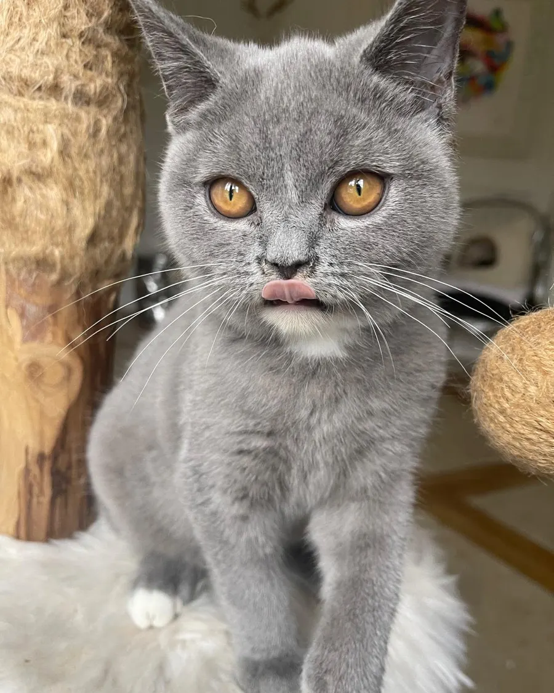
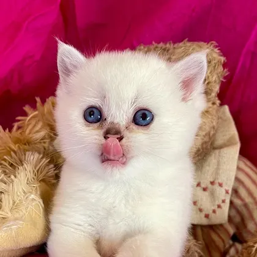
Sa carte d'identité
Son caractère
Posé, doux et fidèle, le British aime la vie de famille… à son rythme.
Il adore être près de vous, un peu moins dans vos bras. Il s'installe à côté de vous sur le canapé et vous suit de pièce en pièce. Beaucoup de British n'aiment pas trop être portés : on respecte.
Il joue avec entrain, par petites séances, puis s'offre une longue sieste. Pas de course folle dans les rideaux : c'est un chat zen.
Il miaule peu, et rarement fort. Revers de la médaille : un British qui a mal ou qui s'ennuie ne le dira pas. C'est à vous d'ouvrir l'œil.
Il ne sort pratiquement jamais les griffes : quand il en a assez, il s'en va. La seule règle à apprendre aux enfants : le laisser partir, sans jamais le poursuivre.
Peu bagarreur, il s'entend avec les chiens comme avec les chats. Comptez une à trois semaines de présentations en douceur : c'est souvent l'animal déjà là qui a besoin de temps.
Il est très heureux en appartement : il grimpe peu et ne cherche pas à sortir. Offrez-lui un poste d'observation en hauteur et un vrai moment de jeu chaque jour.
Son physique
Le British se reconnaît au premier coup d'œil. Petit tour du propriétaire, avec Vesunna.
large, avec de bonnes joues, encore plus marquées chez les mâles
arrondies au bout et bien écartées
cuivre ou orange le plus souvent, verts chez les silver et les golden, bleus chez les colourpoint
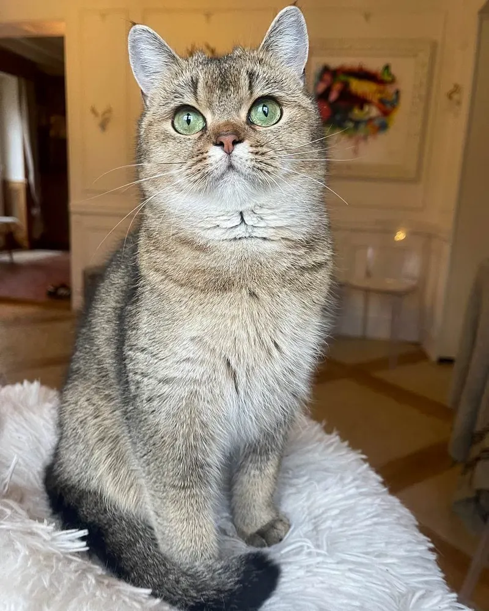
large et droit
trapu et musclé, posé sur des pattes courtes et fortes
dense et ferme, elle se relève sous la main : c'est la signature de la race
Deux fourrures
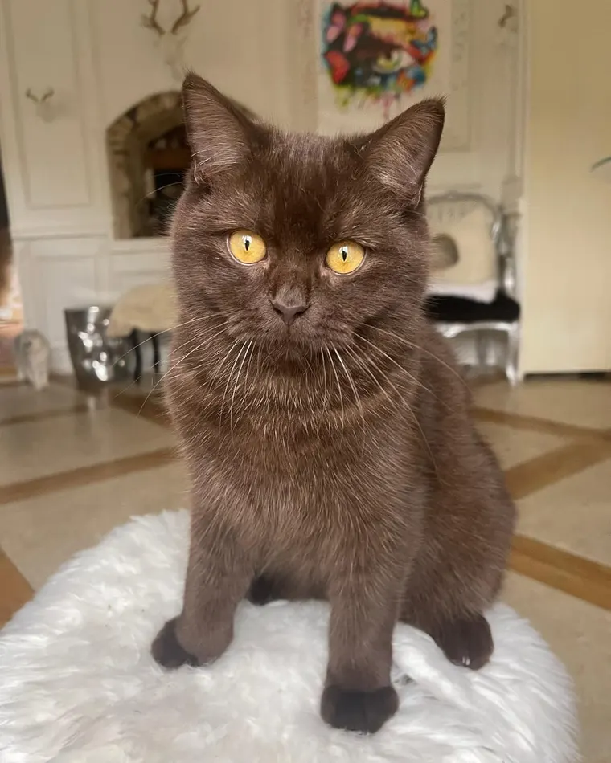
Poil court
Ici, Willy Wonka, chocolat aux yeux orange
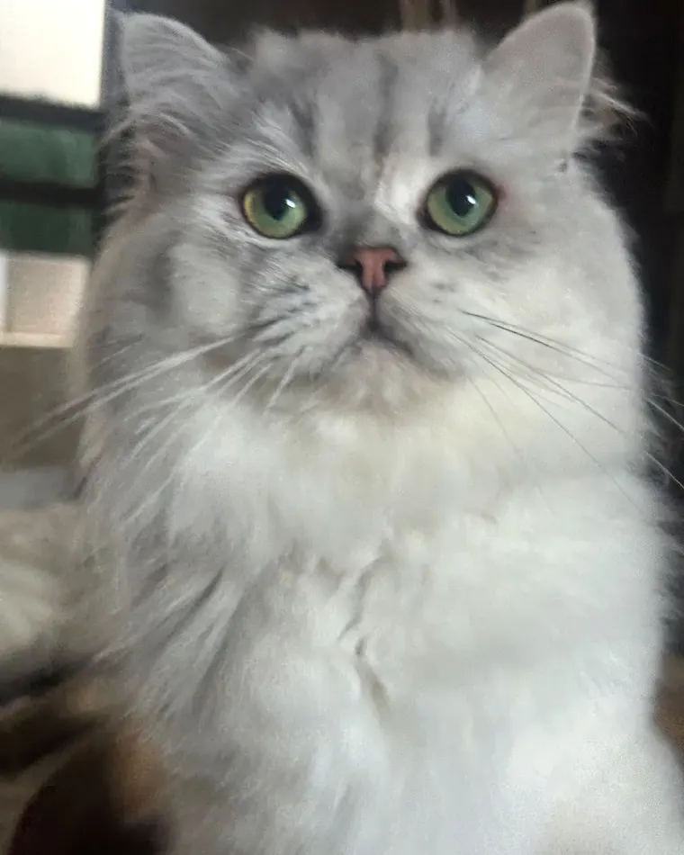
Poil mi-long
Ici, Voltaire, black silver shaded aux yeux verts
Le Longhair, c'est un British qui porte le gène du poil long : même silhouette, même caractère, seule la fourrure change. Deux Shorthair porteurs de ce gène peuvent d'ailleurs donner naissance, dans la même portée, à des chatons à poil court et à poil long.
Nuancier
Le British existe dans des dizaines de robes. Voici celles de nos chats, avec leur code EMS, l'écriture officielle des pedigrees.
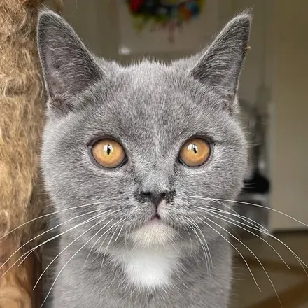
BleuBRI aWilson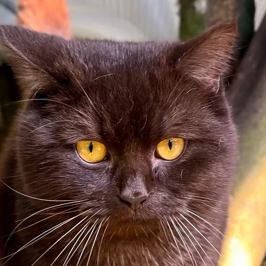
ChocolatBRI bWilly Wonka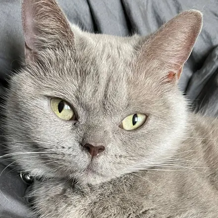
LilasBRI cLuna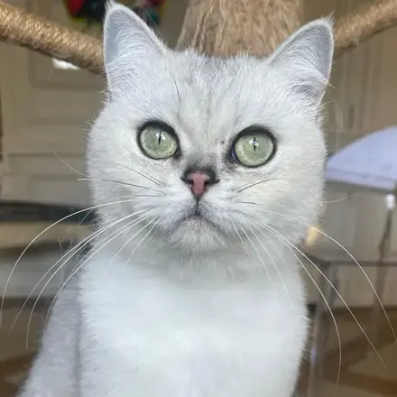
Black silver shadedBRI ns 11Tina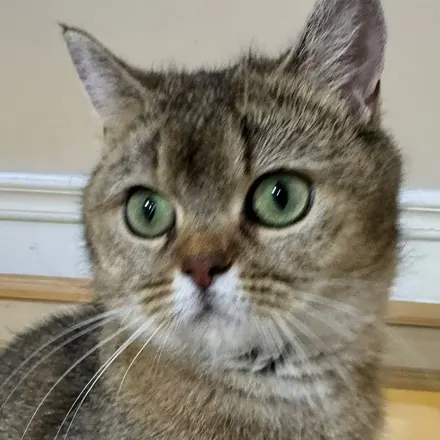
Black golden shadedBRI ny 11Vesunna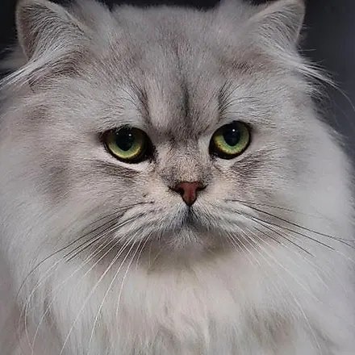
Black silver shadedBLH ns 11Voltaire, poil longLe saviez-vous ?
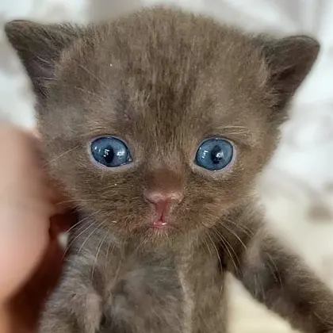
Tous les chatons naissent les yeux bleus, comme ce petit chocolat. Leur vraie couleur apparaît vers trois ou quatre mois, puis s'intensifie encore pendant de longs mois.
C'est l'une des plus anciennes races anglaises : il faisait déjà partie des vedettes du tout premier grand concours félin, au Crystal Palace de Londres, en 1871.
On dit souvent que le Chat du Cheshire, le chat au grand sourire d'Alice au pays des merveilles, a été inspiré par un British.
Il lui faut environ trois ans pour atteindre sa carrure d'adulte. Les mâles en profitent pour se faire de belles bajoues.
Au quotidien
C'est son petit point faible : gourmand et peu sportif, il grossit vite. À l'âge adulte, pas de gamelle à volonté, des jeux qui le font courir et une pesée de temps en temps.
Avec une brosse ou un peigne qui atteint le sous-poil (un gant ne suffit pas) : une fois par semaine pour un Shorthair, tous les deux jours pour un Longhair.
Un vrai moment de jeu chaque jour, et un arbre à chat pour observer la maison d'en haut. Un balcon ? Un filet le rend sûr.
Si la maison est vide toute la journée, pensez à en adopter deux : ils jouent ensemble, se calment ensemble, et pour vous le travail est à peine doublé.
Un mot sur les allergies. Aucun chat n'est hypoallergénique, le British pas plus qu'un autre. L'allergie vient d'une protéine présente dans la salive et les squames, pas de la longueur du poil : un Shorthair n'est donc pas moins allergisant qu'un Longhair. Si quelqu'un chez vous est allergique, parlez-en à un allergologue avant de vous engager, puis venez rencontrer nos chats.
Faites connaissance avec nos reproducteurs, ou découvrez les chatons du moment.